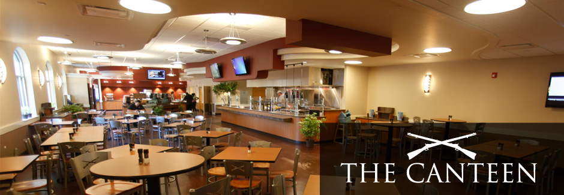

No more queues just to place order in canteen. We present you SmartKanteen, an online food ordering system.
SmartKanteen gives you a quick peek in the canteen.
It shows you caterers available and on selection of caterer it gives you daily menus of that caterer which can be browsed by date. You can place you order for any selected day while you are still at you workstation.
Why SmartKanteen ?
SmartKanteen facilitates you to order items just sitting at your workstation. So now you can say bye to waiting in long queues for placing order. SmartKanteen saves your time n sweat ?.SmartKanteen believe in nothing less than delivering 100% satisfaction.
2. Choose the Caterer
There are number of
caterer attached to
our Smart Canteen
so please select
the caterer before
viewing the today's menu
fromthe dropdownlist
in the homepage.
3. Select Items
View the menu, choose delicious
items you like and place your
order online from
the today's menu by
clicking on the
order button in the
Today's Menu page.